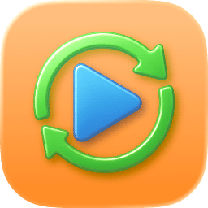
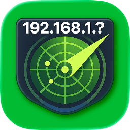
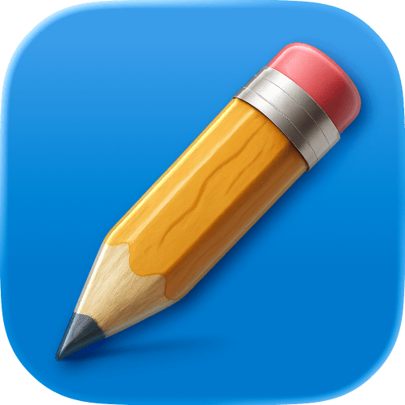
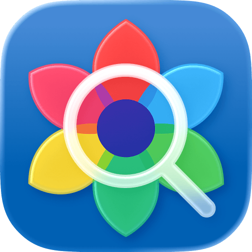
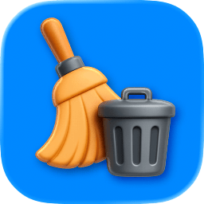
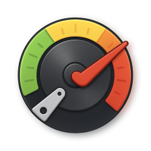
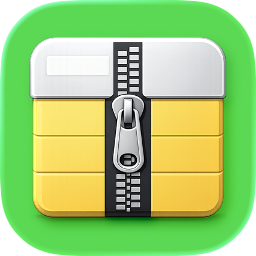
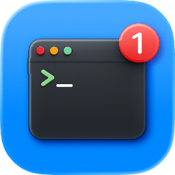
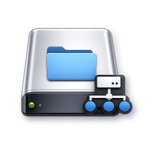
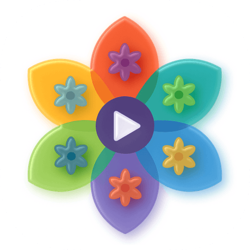

Built around real annoyances
The best ideas here start small: batch renaming, screenshot cleanup, duplicate photo detection, SMB mounting, or ZIP inspection.
George Babichev
I design and ship focused tools for macOS, iOS, and iPadOS. The goal is simple: remove friction, stay native, and make the app feel obvious within seconds.
The best ideas here start small: batch renaming, screenshot cleanup, duplicate photo detection, SMB mounting, or ZIP inspection.
These apps are meant to feel at home on Apple platforms, with familiar controls, lightweight performance, and minimal friction.
Some projects are polished App Store releases, others are public utilities in active iteration. The portfolio reflects both sides of the work.
Portfolio
Filter by app type or platform. If a project is live on the App Store or public on GitHub, the card links directly to it.
Start here if you want the clearest view of what I like building most: focused tools with a strong point of view and polished native behavior.
Highlights first, full catalog right below.
Lifestyle App
A private recipe editor and kitchen companion for saved recipes, planning, and shopping lists.

Media Tool
A straightforward FFmpeg front end for macOS when terminal flags are the wrong interface.

Mac Admin
A quick network scanner for identifying devices on your LAN without piecing the workflow together manually.


Type
Platform
General-purpose macOS utilities built for day-to-day tasks like screenshots, file cleanup, renaming, and quick one-off fixes.

A fast junk-file cleanup utility for macOS when you want to reclaim space without poking through hidden folders by hand.

A lightweight disk benchmark utility that surfaces storage performance without the noise of larger suites.

Inspect, edit, and manage ZIP archives with a richer workflow than the default compress-or-extract experience.
Utilities aimed at sysadmins and power users working with networks, storage, defaults, and device-management workflows.
A simple fix for an annoying macOS job: setting your default email app without digging through system quirks.
A quick network scanner for identifying devices on your LAN when you need answers faster than terminal commands.
Inspect DHCP responses on your network with a purpose-built utility instead of piecing the workflow together manually.

A native disk-usage viewer that helps you see where storage is going without waiting for heavyweight scanners.

A menu bar utility for quickly connecting to SMB shares without repeating the same Finder flow every day.
Utilities for duplicate cleanup, thumbnail generation, and straightforward video workflows.

Create image and video thumbnails, contact sheets, conversions, and quick trims from one capable macOS utility.
A straightforward FFmpeg front end for macOS when you want useful video controls without living in terminal flags.
Consumer-facing apps for playback, notes, recipes, and everyday organization across Apple devices.
A private recipe editor and kitchen companion for saving recipes, planning meals, and building smarter shopping lists.